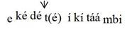

The Problem of Writing about the Logoori Language
David Odden
This note reports on some linguistic research which we have been doing on the Logoori language, before circulating our descriptive grammar of the language. It is specifically addressed to Logoori speakers who might be interested in our findings, but who do not have a background in linguistics to tell you how to interpret special symbols that we use. Or, we hope this note will alert speakers of Logoori to features of the language that they may not have known previously. We will give example words, and if you are reading the file on a computer or phone, you should be able to hear the recordings of words that we provide. When you see a play button after a word or phrase, if you click / press it, the word should play (you may need to tell your computer to “allow” your sound player to play the file). Computer technology does not always work, so it is possible that you can’t hear the recordings.
Our goal is to accurately report the facts of the Logoori language. The problem is, how do we represent actual pronunciation in a written form? There is no single standard for writing Logoori, even though certain practices are often followed. The name of the language is an extreme example of this. There is the fact that the language is often called “Maragoli”. Beyond that, you will encounter various spellings such as Logori, Logooli, Llogori, Logoori. We cannot rely on any existing writing scheme, because all schemes leave out important facts of pronunciation about the language. Three major features of pronunciation are the main purpose of this note, which we discuss first; there are three simpler problems discussed at the end. All of these facts about pronunciation are not consistently noted in writing, and usually people don’t notice these details. To understand the claims that we are making, we encourage speakers of the language to pronounce the words that we provide and to think about their meanings, to see how pronunciation affects meaning. We also encourage you to compare your own pronunciation with the recordings contained here.
As you will discover from this note and the full grammar (and are no doubt aware, based on your experience with how people talk), pronunciations vary quite a lot in the language. We are reporting these facts for scientific reasons: we do not assume anything about how words should be written in ordinary writing. There are some advantages to having a unified spelling, where the word ‘day’ is spelled in just one way despite many different pronunciations: whether that should be ilidiku, lidiku, iridiku, iddiku or something else is a very difficult decision.
Long Vowels
The first such fact of pronunciation is the length of vowels. The word kondora ‘to pick me up’ is pronounced differently from kondora ‘to see me’; ma vahere ‘they will inhale’ is pronounced differently from ma vahere ‘they will come to an end’; kokera ‘to age (of women)’ is different from kokera ‘to milk’. The difference in pronunciation is that in one case, the underlined vowel is short, and in the other case the vowel is long. This difference is recognised in many standard spellings of the language, though this practice is not always observed. These words would be written as koondora ‘to see me’, koondoora ‘to pick me up’, ma vahere ‘they will come to an end’, ma vaheere ‘they will inhale’, kokera ‘to milk’, kokeera ‘to age’. Similar examples are kuragira ‘to promise for’, kuraagira ‘to eat ugali’, kutura ‘to leave’, kutuura ‘to unload’, kuvura ‘to fail or lack’, kuvuura ‘to reveal’ and yaara ‘sue!’, yara ‘spread the bed!’.
There has been a tradition of writing words like kutanga ‘to start’ , kogenda ‘to walk’ with a single vowel (in the 1996 New Testament translation, these and similar vowels are often written single), but these vowels are actually pronounced long, and this fact is recognised in the dictionary of Joseph Ndanyi. The reason for this inconsistency is that there is a rule of the language which makes vowels long before combinations of m, n plus other consonant b, d, j, g, z in some contexts. But that rule is very complicated and does not apply everywhere, for example, it does not apply in izingugi ‘baboons’, nor in nzumbakaa ‘I am building’. The prefix rwa meaning ‘when’ has a long vowel in some cases (rwaandeekaa ‘when I cook’, rwaandeechi ‘when I cooked (recent)’), but a short vowel in other cases (rwandaadeeka ‘when I cooked (long ago)’ rwangedeekaa ‘when I am still cooking’). If a simple rule cannot be given about pronunciation, our system of writing needs to include that information. So we write double vowels whenever a vowel is pronounced long, and we will write single vowels whenever a vowel is pronounced long.
Tone
Logoori is a tone language, but this important has never been indicated in any spelling. This means that voice pitch is part of the makeup of a word, just like the consonants and vowels are. Here are some pairs of words that are the same except for tone:
|
kwiizuriza |
‘to remember’ ; ‘to fill something’ |
|
|
vaamiga |
‘they strangled’ ; ‘they strangled me’ |
|
|
kuviimba |
‘to put on a roof’; ‘to swell’ |
When you say kwiizuriza with the meaning ‘to fill something’, it is pronounced differently from kwiizuriza meaning ‘to remember’.
Another example of a tone difference is yaakagura, which with one tone means ‘he has bought’ (if you are making an announcement that he has finally bought some thing), and with another tone means ‘he bought’ (typically as an answer to a question like ‘where did this thing come from?’). One last example is umuundu yaavariza, where the word umuundu if pronounced differently, depending on whether the sentence means ‘the person counted’ or ‘the person who counted’ .
When we present examples of Logoori, we add accents to vowels to indicate those places where the voice goes up, which marks the difference between these words.
|
|
kwiizʊriza |
‘to remember’ |
kwíízuriza |
‘to fill’ |
|
|
yaakagura |
‘he bought’ |
yáákagura |
‘he has bought’ |
|
umúúndú yááváriza |
‘the person counted’ |
|
|
umúúndu yááváriza |
‘the person who counted’ |
In kwiizʊriza ‘to remember’, the voice remains low through the word, but in kwíízuriza ‘to fill something’, it is high on the first syllable then drops down after that. We say that the first syllable of ‘to fill something’ has a high tone, and the other syllables have low tone. All syllables in ‘to remember’ have low tone. We have the same pattern in yaakagura ‘he bought’ (all syllables are low tones) and yáákagura ‘he has bought’ (only the first syllable is high toned).
In both váámíga ‘they strangled’ and váámiga ‘they strangled me’, the voice starts high, but in ‘they strangled me’, it remains high through the second syllable mí, whereas it drops down on mi in váámiga ‘they strangled me’. In kuviimba ‘to put on a roof’ the voice stays low throughout the word, and in kuvíimba ‘to swell’ it goes up on the second syllable víi, then falls back down.
The tone pronunciation of a word is affected by what kind of sentence the word appears in. The word umuundu ‘person’, when said alone, has only low tones, and no high tones. In the sentence umúúndú yááváriza ‘the person counted’, the voice goes up on the second or sometimes first syllable and stays up until the syllable va. In umúúndu yááváriza ‘the person who counted’, the voice goes up for múú, goes back down for ndu, and then back up for yáá.
The following words have a raised tone on the second from last vowel of the word, as indicated with the accent mark.
|
uvutíma |
‘anger’ |
ikidári |
‘bed’ |
|
|
umugádi |
‘bread’ |
endéve |
‘chair’ |
|
|
rigútu |
‘elder’ |
umurími |
‘farm’ |
|
|
urugága |
‘fence’ |
ekedéte |
‘finger’ |
|
|
umurína |
‘friend’ |
ikimúga |
‘gourd’ |
|
|
ɪridóshi |
‘mud’ |
imbúra |
‘rain’ |
|
|
uvuchíma |
‘ugali’ |
umhíga |
‘year’ |
|
|
iridíku |
‘day’ |
iddíku |
‘day’ |
The last two words illustrate another fact about Logoori pronunciation, that some words have more than one pronunciation. There is a rule explaining why you can say both iridíku and iddíku, which we give in the grammar
In the following words, the voice remains low throughout, and no vowel has an accent mark.
|
embeva |
‘mouse’ |
|||
|
umgoye |
‘rope’ |
enzogu |
‘elephant’ |
|
|
irigina |
‘stone’ |
umurimi |
‘farmer’ |
|
|
ikiriri |
‘violin’ |
orovega |
‘direction’ |
|
|
umuroji |
‘witch’ |
imivano |
‘knives’ |
|
|
ovosera |
‘porridge’ |
umsigu |
‘enemy’ |
|
|
imiviri |
‘bodies’ |
umgeni |
‘guest’ |
|
|
urugano |
‘story’ |
inguvu |
‘cloth’ |
|
|
umgera |
‘river’ |
uvurimu |
‘grass’ |
In these words, the voice is raised on the second to last vowel of the word.
|
nyasáe |
‘God’ |
ibarási |
‘horse’ |
|
|
ikaháwa |
‘coffee’ |
ibahásha |
‘envelope’ |
|
|
ibiríga |
‘kettle’ |
inavódo |
‘basket’ |
|
|
embodóka |
‘jealousy’ |
indurúmi |
‘seizure’ |
|
|
ibaháti |
‘luck’ |
iganísa |
‘church’ |
Compare the following words, where the voice is raised on the third to last vowel of the word.
|
amagáraba |
‘bean leaves’ |
amarásiri |
‘animal blood’ |
|
|
ekekéreko |
‘potash sieve |
irikávati |
‘culvert pipe’ |
|
|
ekeségese |
‘roof peak’ |
ikiságanyi |
‘leaf bundle’ |
|
|
iritíginyu |
‘heel’ |
iritívuri |
‘answer’ |
The tonal pronunciations of words is not absolutely rigid, so the word ‘whirlwind’ may be pronounced as ɪkɪ́kúguti or as ɪkɪ́kú!gútí (we explain the raised exclamation mark below: just notice that there are two pronunciations). There are some general rules about other pronunciations that are possible. For example, the words indurúme, iganísa may also tend to be pronounced as indúrúme, igánísa, with raising of the voice on both the second and third from last syllables. Similarly, ekeségese and amagáraba may also be pronounced as ekéségese and amágáraba with raising of the voice on the third and fourth syllables from the end. The pronunciations indúrúme, igánísa, ekéségese and amágáraba may be more common than indurúme, iganísa, ekeségese and amagáraba. This grammar will explain the rules making these pronunciations all possible.
One rule which pervades the language is that when a word has a high tone, the vowels before it may also have the same high tone. The word umugera ‘river’ has no high tone when said alone, and it also has no high tone if combined with certain other words.
|
umuger(a) umwaangu |
‘quick river’ |
|
|
umugera mulla |
‘1 river’ |
|
|
umugera vuza |
‘only a river’ |
Actually, in the pronunciation of the first example, the phrase is pronounced umuger-umwaangu, eliding the first vowel at the end of the word umugera. This is another aspect of Logoori pronunciation that is explained in the grammar. In this note, the final vowel will be written so that you will recognize the word, but the elided vowel is put in parentheses in order to indicate that it is not actually said in the recording.
But when other words (ones which have a high tone) follow this same noun, the pronunciation of the noun changes.
|
umúgér(á) úmútáámbi |
‘long river’ |
|
|
umúgér(á) úmúzíllu |
‘cold river’ |
One final feature of tonal pronunciation needs to be pointed out. In umúgér(á) úmútáámbi and umúgér(á) úmúzíllu, the tone is constantly raised within the noun umugera, to the final syllable of the next word. This is different from the pronunciation of ekedet(e) ikitaambi ‘long finger’: the voice goes up on de and possibly ke, then drops a little, continues at a less-high level on the syllables …te ki taa…, then drops down to a low level at the verb end.

When high tones have such a shift downwards, we mark that with a little raised exclamation point: ekédé!t(é) íkítáámbi. A similar example is the word uvuchíma ‘ugali’, when combined with the adjective vuráhi ‘good’: we may hear uvuchí!m(á) úvúráhi .
Some nouns have more than one high tone in them. For example, in these nouns, the first syllable has a high tone, then the tone drops part-way down.
|
í!ndámá |
‘tobacco plant’ |
é!ngókó |
‘chicken’ |
In these nouns, the first high tone is on the second and possibly first syllable, and a second lowered high is on the last two syllables.
|
ikɪ́!fúryá |
‘pan’ |
irí!várú |
‘ant type’ |
|
|
irí!gómyá |
‘banana’ |
umú!zúné |
‘sunbird’ |
|
|
irí!kéré |
‘frog’ |
urú!fúnú |
‘tether’ |
Here are more examples, where the word begins with some low toned syllables then has a high toned syllable, next a drop in pitch, and finally high toned syllables all the way to the end of the word.
|
uruháá!ngáywá |
‘cave’ |
iridáá!ndárwá |
‘tent canvas’ |
|
|
icháá!mégéré |
‘a mushroom’ |
ikisíí!mbííkɪ́rá |
‘bird (whydah)’ |
Notice the difference in pronounciation between these pairs of nouns.
|
ikijá!mányú |
‘squirrel’ |
|||
|
ekemé!nénwá |
‘cartilage’ |
ekéségese |
‘roof peak’ |
|
|
iridá!váryá |
‘clay paste’ |
amágáraba |
‘bean leaves’ |
In both sets of words, the tone becomes high towards the beginning of the word and then drops down. In the words on the right, the tone drops further down than it does in the words on the right. The same pattern exists in these pairs of words.
|
uruháá!ngáywá |
‘cave’ |
umurógoori |
‘Logoori’ |
|
|
iridáá!ndárwá |
‘tent canvas’ |
imíísheni |
‘mission’ |
|
|
icháá!mégéré |
‘a mushroom’ |
umwúúmbachi |
‘builder’ |
|
|
ikisíí!mbííkírá |
‘bird (whydah)’ |
ibáákoora |
‘cane’ |
You may find yourself confused about our claims if you don’t agree with these pronunciations. The fact is that there is a lot of variation in how words are pronounced, so we have observed pronunciations for ‘rabbit’ including kɪsʊ́ʊ́!ngʊ́ra, kɪ́!sʊ́ʊ́ngʊ́ra, kɪ́sʊ́ʊ́!ngʊ́rá, and kɪsʊ́ʊngʊ́ra. As far as we can tell, the word mrógoori always has this tone, and not *mrógóori; ‘people’ may be vaandʊ or avaandʊ, but never *váandʊ or *aváandʊ. By including a number of examples, we hope you will at least agree with the majority of pronunciations that we provide. Our point is that pronunciations of words are not completely fixed across the language.
Vowel Qualities
In ordinary writing, Logoori uses the 5 vowel letters a e i o u of the Latin alphabet: Logoori does not use the extra letters ĩ ũ like Kikuyu does. The problem is that there are actually 7 vowels in Logoori: the letters i and u each stand for two different vowels. Linguistics has special symbols to make that difference clear: we would write [i] or [ɪ], [u] or [ʊ]. We have not used these letters above, but now we introduce them so that you can see how they play a role in the Logoori language. To show that there are 4 vowels but only 2 ordinary letters, we will look at some forms of the verb used to give orders. There is a difference between how you would say ‘ask us!’ if you are speaking to one person, versus ‘ask us!’ said to a group of people. If you say it to one person, you say koteevé, and if you say it to a group of people, you say koteeví. In the examples, we translate this difference of meaning as ‘(plural)’. For these verbs, the order to one person ends with the vowel e and the order given to a group ends with i.
|
|
koteevé |
‘ask us!’ |
koteeví |
‘(plural) ask us! |
|
|
kovohé |
‘tie us!’ |
kovohí |
‘(plural) tie us!’ |
For other verbs, the order to one person ends with i and not e. The rule is that if the vowel before the last one is a, e or o, the last vowel is e, otherwise it is i (this is explained in the grammar). But even though you would spell ‘bite him!’ the same as ‘(plural) bite him!’, murumi, these words are pronounced differently. This is because there are two different kinds of i (as well as two kinds of u), which are normally spelled the same. The singular order has the vowel which we write as [ɪ], and the plural order has the vowel which we write as [i].
|
|
mʊrʊmɪ́ |
‘bite him!’ |
mʊrʊmí |
‘(plural) bite him!’ |
|
|
kɪgʊrɪ́ |
‘buy it!’ |
kɪgʊrí |
‘(plural) buy it!’ |
|
|
kɪtuumɪ́ |
‘cross it!’ |
kɪtuumí |
‘(plural) cross it!’ |
|
|
kɪdiirɪ́ |
‘hold it!’ |
kɪdiirí |
‘(plural) hold it!’ |
This difference between [i] and [ɪ] also influences how some consonants are pronounced. There is a rule where k and g become ch and j when they come before i.
|
|
vibaangé |
‘arrange them!’ |
vibaanjí |
‘(plural) arrange them!’ |
|
|
mbaké |
‘smear him!’ |
mbachí |
‘(plural) smear him!’ |
This rule applies in the form for giving an order to a group, but not when giving an order to one person. The reason for this difference is that only the order to a group has the vowel [i], and only the vowel [i], not the vowel [ɪ], changes k and g to ch and j.
|
|
kɪvɪɪkɪ́ |
‘store it!’ |
kɪvɪɪchí |
‘(plural) store it!’ |
|
|
kʊsiingɪ́ |
‘bathe us!’ |
kʊsiinjí |
‘(plural) bathe us!’ |
|
|
kɪzukɪ́ |
‘pour it!’ |
kɪzuchí |
‘(plural) pour it!’ |
|
|
kɪchʊʊngɪ́ |
‘strain it!’ |
kɪchʊʊnjí |
‘(plural) strain it!’ |
|
|
kʊtʊʊngɪ́ |
‘pay us!’ |
kɪtʊʊnjí |
‘(plural) pay us!’ |
Another change of pronunciation related to [i] versus [ɪ] is that y becomes “light” (sometimes not pronounced at all) when the next vowel is [i] – but not when the vowel is [ɪ].
|
|
kʊchaayé |
‘speak ill of us!’ |
kʊchaaí |
‘(plural) speak ill of us!’ |
|
|
keyooyé |
‘scrape it!’ |
keyooí |
‘(plural) scrape it!’ |
|
|
mdʊyɪ́ |
‘beat him!’ |
mdʊí |
‘(plural) beat him!’ |
|
|
vakʊyɪ́ |
‘beat them!’ |
vakʊí |
‘(plural) beat them!’ |
There are also two kinds of u, which we write as [u] and [ʊ]. This difference is even harder to illustrate. The word ‘hill’ would normally be spelled ikiguru: we write it as [ɪkɪgʊrʊ]. Listen to these three pronunciations: , , . Now compare those with the word ‘hard-working’ when it refers to a word like ɪkɪ́bága ‘cat’: , : ‘hard-working’ is [ɪkɪguru], with a different type of u. Although all speakers of the language implicitly know the difference between these vowels, probably few speakers are consciously aware of this difference. There are very few cases when one vowel gives one word, and changing just that vowel gives a different word.
Still, we can illustrate the difference by looking at words that are very similar but have either [i,u] or [ɪ, ʊ]. The vowel in ‘to fold’ is a different vowel from that in ‘to protect’ and ‘to watch’, but you could tell the difference from just the consonants.
|
kʊríinga |
‘to fold’ versus |
|
|
kʊkɪ́ɪnga |
‘to protect’ |
|
|
kʊrɪɪnda |
‘to watch’ |
Here are more examples of verbs where the vowel is either [i] or [ɪ]
|
kʊviida |
‘to sprinkle’ |
kʊvɪ́ɪka |
‘to store’ |
|
|
kʊsiinga |
‘to bathe’ |
|||
|
kʊsiita |
‘to twist’ |
kɪsɪɲa |
‘to annoy’ |
|
|
kʊviimba |
‘to put on a roof’ |
|||
|
kʊdiɲa |
‘to be hard’ |
kʊrɪma |
‘to plow’ |
|
|
kʊvísa |
‘to hide something’ |
kʊvɪ́ta |
‘to pass’ |
|
|
ɪridíkʊ |
‘day’ |
ʊvʊ́tɪ́ma |
‘anger’ |
|
|
ʊvʊchíma |
‘ugali’ |
umhɪ́ga |
‘year’ |
|
|
ɪkɪritu |
‘heavy’ |
ɪkɪ́rɪ́tʊ |
‘chest’ |
|
|
ríshíga |
‘cooking stone’ |
amárɪ́ga |
‘funeral meeting’ |
|
|
ɪtíɲa |
‘fatty meat’ |
ʊmʊrɪ́na |
‘friend’ |
|
|
ʊmtíga |
‘widow’ |
ʊvʊ́tɪ́ma |
‘anger’ |
|
|
ʊvʊvira |
‘witches spell’ |
ɪmivɪrɪ |
‘bodies’ |
|
|
ʊmʊ́!rííngá |
‘beehive’ |
ʊmʊrɪ́mi |
‘farm’ |
|
|
ɪllíína |
‘hole’ |
ɪrigɪna |
‘stone’ |
|
|
|
|
ɪtɪ́ɪ́ga |
‘giraffe’ |
These are further examples of the difference between [u] and [ʊ].
|
kʊduuha |
‘to be blunt’ |
kʊdʊ́ʊka |
‘to reach’ |
||
|
kʊgúuta |
‘to overcome’ |
kʊ́kʊ́ʊra |
‘to extract’ |
||
|
kʊtuuma |
‘to cross’ |
kʊfʊʊma |
‘to cover’ |
||
|
kʊ́kúunga |
‘to chase away’ |
kʊchʊʊnga |
‘to strain’ |
||
|
kʊruumba |
‘to push’ |
kʊrʊʊnga |
‘to season’ |
||
|
kʊguunda |
‘to rot’ |
kʊtʊ́ʊnga |
‘to pay’ |
||
|
kʊkúza |
‘to die’ |
kʊkʊya |
‘to beat’ |
||
|
kʊrúga |
‘to cook ugali’ |
kʊrʊ́ka |
‘to vomit’ |
||
|
kʊzuka |
‘to pour’ |
kʊ́kʊ́ba |
‘to beat’ |
||
|
ɪríkúdu |
‘tortoise’ |
kɪ́sʊ́su |
‘butterfly’ |
||
|
guugá |
‘grandfather’ |
gʊ́ʊ́kʊ |
‘grandmother’ |
||
|
ɪrí!kúúré |
‘owl’ |
ɪríkʊ́ʊ́rʊ |
‘pigeon’ |
||
|
ɪ́!súná |
‘mosquito’ |
ɪbʊ́sa |
‘maize beer’ |
||
|
rí!dúúma |
‘maize’ |
ɪndʊ́ʊ́mba |
‘drum type’ |
||
|
ɪkɪ́!túúndá |
‘planting mound’ |
ɪkɪ́mʊ́ʊna |
‘squirrel’ |
||
|
ɪsúúka |
‘sheet’ |
ɪkɪ́mʊ́ga |
‘gourd’ |
||
|
ɪrí!súúzá |
‘vegetable type’ |
ɪmbʊ́ʊ́za |
‘strong wind’ |
||
|
ɪríkúdu |
‘tortoise’ |
ɪmbʊ́ra |
‘rain’ |
||
|
ʊmʊnúúsu |
‘uncircumcised male’ |
ɪmʊ́ʊya |
‘pocket’ |
||
|
ɪmbúkú |
‘mole’ |
ɪ́!mbʊ́rʊ́ |
‘monitor lizard’ |
Unsolved matters
There are a couple of difficult problems with our goal of writing Logoori in a way that reflects pronunciation. One is the matter of “l” versus “r”.
l and r
There is a general rule that the consonant is pronounced clearly like “l” when it is doubled (mʊlla ‘1’ referring to words like ‘river; person’), and as “r” when it is single (ndara ‘1’ refering to ‘cow’). Double l is not a problem. The single sound that we write as r has a different sound quality from “r” of English (actually, in English, there is a lot of dialect difference in how “r” is pronounced). We have found that the r-like pronunciation sounds like it is “mixed with l” depending on the context and the individual. For example, the word ‘brick’ may sound more like lidá!fáari or ridá!fáari, depending on the individual. There is especially a tendency for the l~r sound to be closer to “l” before i.
A clear single “l” does appear in some cases where we would not expect it, for example, the adjective kamíili will, for some speakers, be pronounced with a clear single l. The reason for this is clear: this is because the word derives from Swahili kamili, and some speakers therefore pronounce it with clear l, making it sound more like Swahili. Speakers may even use both pronunciations. Likewise, the word ‘Luo”, ʊmjálwo, is always pronounced with “l” and not “r”, as far as we know.
Since our goal is to describe how people do pronounce words (and not how we think people should pronounce words – we have no basis for making that judgment), this means that we ought to write “l” in those cases where a person clearly say “l” rather than “r”. Therefore, in those cases where we notice clear “l”, we will present the example spelled with l. We may not always notice one of these surprising clear-l sounds. The point is that even though the difference between “r” and “l” is subject to a rule (single “r”, double “l”), single “l” is also entering the language. The problem is that it represents a fact about the pronunciation of an individual: we do not want anyone to think that the pronunciation kamíili is a general characteristic of the whole language.
ny
Another problem regards the sound usually spelled “ny”. A simple illustration of the problem is a comparison of kweenya ‘to want’ and yeenyi ‘he wanted’ – “ny” is usually pronounced very differently in those words. The tip of the tongue is flatter and further forwards in kweenya, and the back of the tongue is more advanced and raised in yeenyi. However, these two types of ny are not always pronounced differently, and we think that for some people there is no difference in pronunciation.
In this case, we have to resort to special letters (as we did with ɪ and ʊ), in order to indicate which pronunciation is used in speech. In our writing, we will use the special letter ɲ to indicate the kind of sound in kweenya, and we use “ny” for the sound in yeenyi. There are some rules about when ny is pronounced as ny and when it is ɲ. Usually, it is pronounced as ɲ before the vowels a e o.
|
|
ɲasáye |
‘God’ |
kʊɲára |
‘to be able’ |
|
ɪɲama |
‘meat’ |
mɲó!róró |
‘chain’ |
|
|
koɲoora |
‘to get’ |
eɲeengengero |
‘brewing pot’ |
|
|
ʊmkéɲe |
‘mashed beans and sweet potatoes’ |
It is pronounced as ny before i. (We are not sure about u since we don’t have much data on nyu).
|
|
kisaganyi |
‘bundle of leaves’ |
|
|
yeenyi |
‘he wanted’ |
|
vasinyí |
‘(plural) annoy them!’ |
Before ɪ and ʊ it tends to be pronounced ny, but can be pronounced as ɲ
|
|
ɪɲʊ́ʊ́mba , ɪnyʊ́ʊ́mba |
‘house’ |
|
kʊnyɪɪra |
‘to stretch’ |
|
|
kʊnyʊ́ʊnya |
‘to give the breast’ |
But there are other complications. For example, vaanya ‘mothers’ is pronounced with ny, not ɲ. There is a systematic difference in verb forms plain verbs and the version meaning “cause to___”, when the plain verb has ɲ, the “cause to___” form changes that to ny.
|
komooɲa |
‘to gossip’ |
|
|
komoonya |
‘to cause to gossip’ |
|
|
kʊɲááɲa |
‘to eat’ |
|
|
kʊɲáánya |
‘to cause to eat’ |
|
|
kʊnyáánya |
‘to cause to eat’ |
Another ‘regular exception’ is that some verb forms always have ɲ before ɪ, ʊ and cannot have ny. (The star in these examples means that the given form is incorrect)
|
kʊ́ʊ́ɲɪmbɪra |
‘to sing for me’ |
*kʊ́ʊ́nyɪmbɪra |
||
|
ɲʊmbákáa |
‘I am building’ |
*nyumbákáa |
||
|
vasiɲɪ́ |
‘annoy them!’ |
vasinyí |
‘(plural) annoy them!’ |
|
|
*vasinyɪ́ |
(for ‘annoy them’ said to one person) |
As in the case of l and r, we will write ny or ɲ depending on what was actually pronounced: if a speakers says ɪɲʊ́ʊ́mba we will write that, and if they say ɪnyʊ́ʊ́mba we write it that way.
Our last problem related to “ny” is the very interesting verb ‘to wither’, which we write as [kʊniara] . In this case, the sound is not [ɲ] like the words kʊɲára ‘to be able’ or kʊɲááɲa ‘to eat’, and not [ny] like kʊnyáánya ‘to cause to eat’. We don’t know of any other word that is like this.
Summary
Our goal has been to tell speakers of the language some of the special symbols that we use in our description, and point out subtle facts of pronunciation that are not widely known. As for how words should be spelled in Logoori, we do not offer any changes in spelling practices. The practice of double-vowel writing is well-enough established, although not uniformly followed. Even though tone plays a very important role in the Logoori language, the rules for tone and meaning are very complicated – after years of study, we still don’t understand them – and we know that they differ somewhat from speaker to speaker. Therefore, marking tone in a spelling system would probably cause massive confusion (do you say ɪkɪ́kúguti or ɪkɪ́kú!gútí ?), and we think that for practical purposes as opposed to our scientific purposes, marking tone would cause problems). As for marking the difference in vowels, making the difference between [i] and [ɪ] or [u] and [ʊ] is very rarely necessary in order to be understood, so from a practical standpoint, we would not advocate adding new letters like [ɪ ʊ], [ĩ ũ] or [ɨ ʉ].